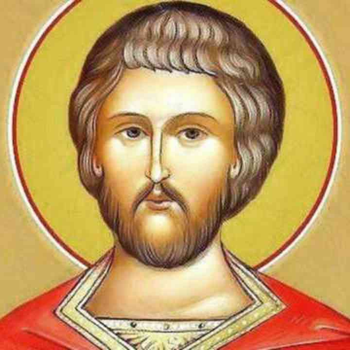

Здравствуйте!
По заявкам конфиденциально:Оказываю молитвенную помощь и поддержку. В том числе и о том, за что другие отказывают.
Молю Бога о здравии, богатстве и деньгах, счастье и удаче, успехе и благополучии, избавлении от бед и о процветании.
Осуществляю молитвенное сопровождение сделок, проектов, стартапов и других мероприятий.
Молитвенное сопровождение бизнеса.
Молитвенная профилактика. В том числе проблем с налоговыми и правоохранительными органами.
Если проблемы возникли, то молю Бога о минимизации последствий.
Осуществляю экстренную неотложную молитвенную помощь и поддержку по заявкам в конкретное время и по конкретному случаю.
Поминаю о здравии и о упокоении.
Личное молитвенное сопровождение.
Пишите ваши просьбы. Пожертвования приветствуются.
Email: EvgeniiHram@outlook.com
Telegram: @EvgeniiHram
WhatsApp: Келейный храм Евгения
X: @EvgeniiHram
Instagram: @EvgeniiHram
Bastyon: @EvgeniiHram